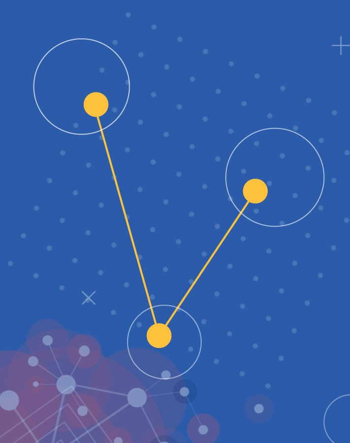
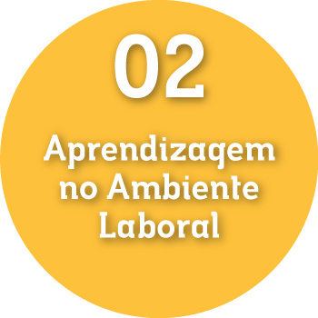

Essas atividades educativas incluem ao menos três possibilidades formativas, veja o infográfico:
Clique sobre os tópicos para visualizar:

-
1. Cursos de Qualificação Profissional
- Permitem a escolha de uma infinidade de formações laborais, pois atendem a possibilidades laborais, uma vez que não há regulamentação ou exigência/requisito legal específico, além da carga horária muito variável.
- As qualificações podem ser ofertadas por escolas técnicas, escolas em geral, e também por empresas e demais instituições, desde que haja uma estrutura mínima para formação e desenvolvimento de atividades experimentais.
-

2. Aprendizagem no Ambiente Laboral
- São atividades de aprendizagem como as oferecidas pelos Serviços Nacionais de Aprendizagem (SENAI, SENAC, SENAT, SENAR).
- Período de atividades de aprendizagem compõe a carga horária do ensino médio para a formação profissional.
- A aprendizagem possibilita a inserção do jovem aprendiz no mundo do trabalho a partir dos quatorze anos nas mais variadas atividades laborais.
-
3. Atividades Educativas em Instituições não Educacionais
- São atividades educativas oferecidas por conservatórios de artes, museus, bibliotecas, centros de saúde, organizações não governamentais, instituições filantrópicas, cooperativas, instituições comunitárias, entre outros.
- Os espaços educativos podem compor o itinerário DE formação técnica e profissional, cada qual em suas possibilidades, desde que a escola mantenha convênio educacional.
- O estágio supervisionado pela escola também pode compor uma qualificação dentro deste itinerário. Por exemplo, um aluno pode fazer estágio em uma atividade laboral e sua carga horária fazer parte da formação profissional a que se refere este itinerário, desde que haja um programa de estágio devidamente avaliado pela escola.
Figura 03 - Fonte: Imagem produzida pela equipe gráfica do projeto.